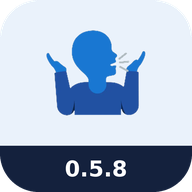

Sapa on the webCounts the people your camera sees, counts raised hands, runs question rounds and picks a random person. The model runs in this page, in your browser. Camera frames are never saved or sent anywhere, and nothing is identified by name.
Limits. It only counts people the camera can see: hidden, tiny, far or dark people are missed and a packed room will undercount. A round result is the most hands seen in a single frame, not unique voters. This is a test port of the Android app's counter (the Android build has also not been validated in a real room yet). Needs HTTPS and camera permission. Phone browsers may stop the camera when the tab is hidden or the screen locks. The optional online Jev features (photo question, round insight) stay Android-only: they need an API key.
0people
0hands up now
0most hands at once
source: camera
Camera off. Manual numbers and the number picker still work.
Manual numbers (fallback)
People Hands
Question round
(no rounds yet)
Random audience pick
Choose the pool each time. The picture freezes on the picked person (yellow box). It cannot know names.
-
Detection: YOLOv8n-pose (Ultralytics, AGPL-3.0) with ONNX Runtime Web (MIT), both served from this site. Notices: NOTICE.txt, MIT text. Source (AGPL-3.0): sapa · Android app · all apps